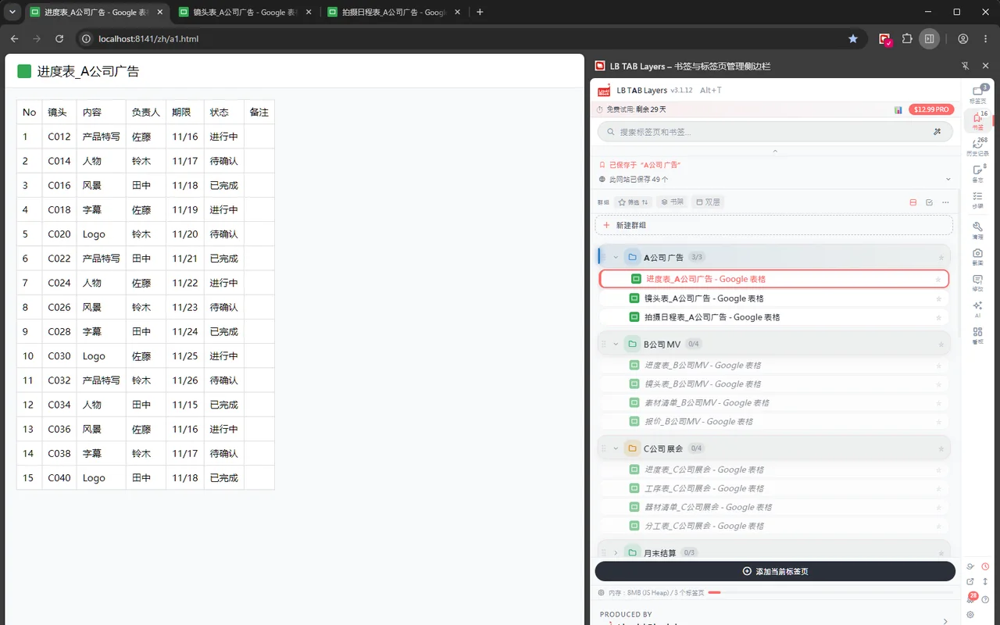
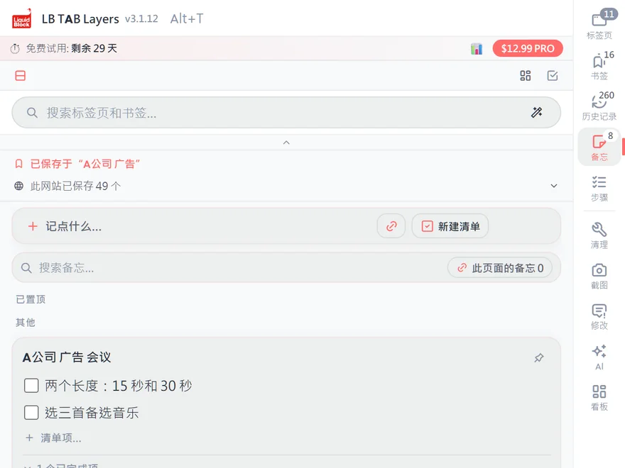
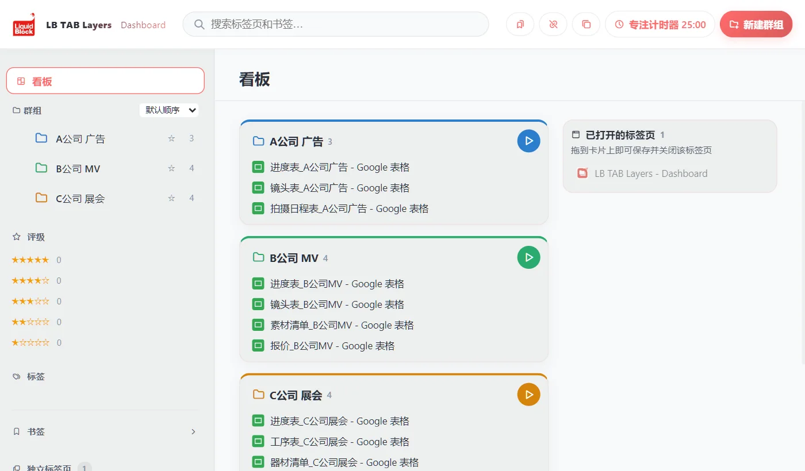
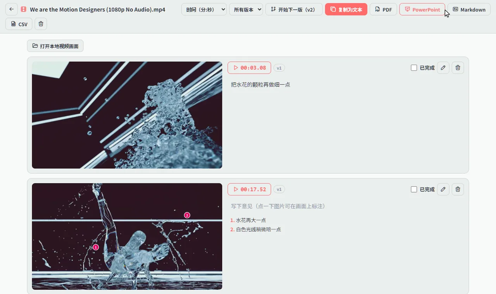

那个页面，
在哪儿来着。
- 一直开着总觉得关了就找不回来，所以不敢关。
- 到处找在标签页的海洋里，每天花上 5 分钟、10 分钟。
- 全部消失电脑卡了，重启一下，标签页全没了。
手一直在动，工作却没有进展。
这样的时间，我们帮你省掉。
在同一个画面里，同时管理书签和标签页。
标签页是“现在”，书签是“抽屉”。
把工作用的标签页按项目收起来，再一次全部打开。
按 Alt+T，随时打开。
项目一多，标签页就有 11 个。
这是实际画面（Chrome 右侧是 LB TAB Layers）。
手一直在动，工作却没有进展。
这样的时间，我们帮你省掉。
以后要用的，放进抽屉。
要做的事，和要留着的东西。
只要分开，头脑就轻松了。

把用完的标签页一次全部关闭。
把项目的标签页一次全部打开。
输入几个字，页面就出来了。

浏览器旁边，始终是同一个画面。
上面是书签，下面是当前的标签页。
不用来回切换，全都看得见。
按下 Alt+T，在任何页面都能打开。

收起来的地方，就是 Chrome 的书签。
所以，可以放心地关掉。
来自 Chrome 应用商店的评价（译自日语）
工作中临时要用的网站可以归在一起，觉得很方便。能按分组一次关掉，这点很好。比一个一个添加书签轻松多了。
以前不知不觉就开了多得离谱的标签页，找想看的页面很费劲。界面一看就懂，不擅长整理的人也能轻松使用。
一直想着“标签页开太多电脑会变慢”，却放着没管，这也许就是解决办法。分到文件夹里的过程，心情也跟着清爽，很舒服。
一次只要几十秒。可是每天要做几十次。
省下来的时间，请用来思考。
这是打开电脑里的视频文件时的画面。在 YouTube 上也是同样的流程。
不用重新上传视频，直接写在浏览器里正在看的视频上。支持 YouTube、Vimeo、Google Drive，以及嵌入网页的视频。
这是一家做影像的公司，为了自己的修改沟通而做的。
一开始，只用标签页和书签就够了。
需要的时候，它就在旁边。



用得越多，攒的奖章越多。第一次操作时，还有小小的庆祝。

Liquid Block 是一家制作影像和动态图形的公司。策划案的资料、在线工具、各种各样的 AI。制作现场，标签页多得装不下。
查找、重新打开、重新制作。不想让这些操作占掉思考的时间，所以为自己做了这个工具。
可以。保存、搜索、一次全部打开和关闭，都可以免费使用。前 30 天可以试用全部功能。PRO 是一次性买断，没有月费。
可以照常使用。Chrome 的书签可以直接导入并整理。
保存的标签页会作为 Chrome 书签留下。主题、颜色等设置会消失。
可在 Google Chrome（114 及以上版本）上使用。支持 Windows、Mac、Linux 和 ChromeOS。Edge 版正在筹备中。